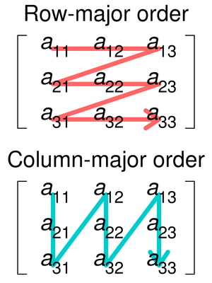
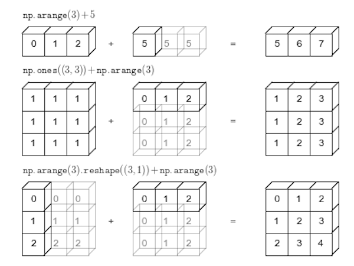
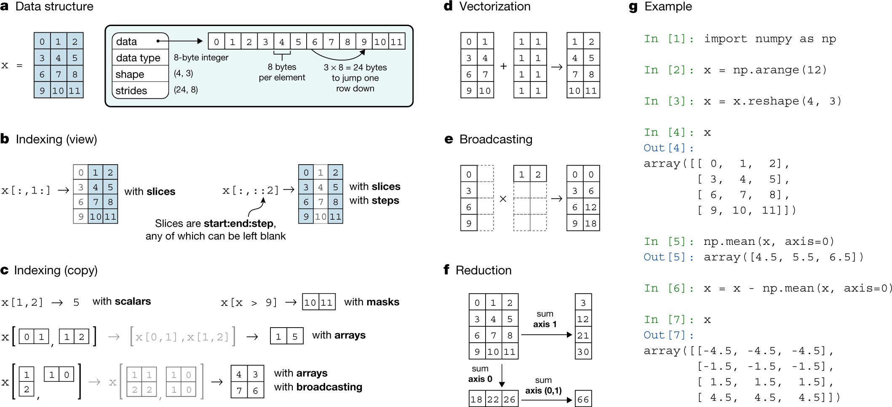

Python Basics
Data Types
int, float, str, bool, list, tuple, dict, set, None
String and String Operations
| Operation | Description |
|---|---|
len(text) |
Length of text |
text.upper() |
Uppercase |
text.lower() |
Lowercase |
text.capitalize() |
Capitalize first letter |
text.title() |
Capitalize first letter of each word |
text.strip() |
Remove leading and trailing whitespace |
text.split(' ') |
Split string into list of words, using ’ ’ as delimiter. Default delimiter is ’ ’. |
List and List Operations
| Operation | Description |
|---|---|
len(list) |
Length of list |
list.append(item) |
Append item to end of list |
list.insert(index, item) |
Insert item at index |
list.pop(n) |
Remove and return item at index n. Default n is -1 |
sorted(list) |
Returns a new sorted list without modifying original list |
list.sort() |
Sort list in ascending order. To sort in descending order, use list.sort(reverse=True). (edit original list) |
list.reverse() |
Reverse list in place (edit original list) |
Dictionary and Dictionary Operations
| Operation | Description |
|---|---|
| Create dictionary | dict = {'key1': 'value1', 'key2': 'value2'} or dict = dict(key1='value1', key2='value2') |
| Create empty dictionary | dict = {} or dict = dict() |
dict['key'] |
Get value of key |
dict.get('key', default) |
Get value of key, if key does not exist, return default value |
dict.pop('key') |
Remove and return value of key |
dict.keys() |
Return list of keys |
dict.values() |
Return list of values |
dict.items() |
Return list of tuples (key, value) |
Summary of Data Types
| Feature | List | Tuple | Dictionary (dict) | Set |
|---|---|---|---|---|
| Mutable | Yes | No | Yes | Yes |
| Ordered | Yes | Yes | No | No |
| Indexing | By index (0-based) | By index (0-based) | By key | No |
| Duplicates | Allowed | Allowed | Keys must be unique | Duplicates not allowed |
| Modification | Can change elements | Cannot change elements | Values can be updated | Elements can be added/removed |
| Syntax | Square brackets [] |
Parentheses () |
Curly braces {} |
Curly braces {} |
| Use Case | When order matters | When data should not change | Mapping keys to values | For unique values and set operations |
| Example | [1, 2, 'three'] |
(1, 2, 'three') |
{'name': 'Alice', 'age': 30} |
{'apple', 'banana', 'cherry'} |
Inline for loop
# syntax: [expression for item in list]
# syntax: [expression for item in list if condition]
# syntax: [expression if condition else other_expression for item in list]
words = ["the", "list", "of", "words"]
x = [len(word) for word in words] # [3, 4, 2, 5]
x = [word for word in words if len(word) > 2] # ["the", "list", "words"]
x = [word if len(word) > 2 else "short" for word in words] # ["the", "short", "short", "words"]Inline if-else
# syntax: value_if_true if condition else value_if_false
words = ["the", "list", "of", "words"]
x = "long list" if len(words) > 10 else "short list"Try-Except
try:
# code that might raise an exception
except:
# code to handle exception
raise TypeError("Error message") # raise exceptionFunctions
def function_name(arg1, arg2, arg3=default_value): # default values are optional
# code
return value
def function_name(*args): # takes in multiple arguments
for arg in args:
# code
return value- side effects: If a function does anything other than returning a value, it is said to have side effects. An example of this is when a function changes the variables passed into it, or when a function prints something to the screen.
Lambda/ Anonymous Functions
# Syntax: lambda arg1, arg2: expression
lambda x: x+1Docstrings
# NumPy/SciPy style
def repeat_string(s, n=2):
"""
Repeat the string s, n times.
Parameters
----------
s : str
the string
n : int, optional
the number of times, by default = 2
Returns
-------
str
the repeated string
Examples
--------
>>> repeat_string("Blah", 3)
"BlahBlahBlah"
"""
return s * nType Hinting
def repeat_string(s: str, n: int = 2) -> str:
return s * nClasses
class ClassName:
def __init__(self, arg1, arg2):
# code
def method_name(self, arg1, arg2):
# code
@classmethod
def other_method_name(cls, arg1, arg2):
# classmethod is used to create factory methods, aka other ways to create objects
# code
# Inheritance
class SubClassName(ClassName):
def __init__(self, arg1, arg2):
super().__init__(arg1, arg2)
# code
def method2_name(self, arg1, arg2):
# codeStatic Methods
class ClassName:
static_var = 0
@staticmethod
def method_name(arg1, arg2):
# code
ClassName.static_var += 1
return ClassName.static_var
@staticmethod
def reset_static_var():
ClassName.static_var = 0Assert
class TestVector(unittest.TestCase):
def test_str1(self):
v1 = Vector(1, 2, 3)
self.assertIn("Vector = [1, 2, 3]", v1.__str__())
self.assertEqual(len(v1.elements), 3)
def test_str2(self):
v1 = Vector(500)
self.assertIn("Vector = [500]", v1.__str__())
TestVector = unittest.main(argv=[""], verbosity=0, exit=False)
assert TestVector.result.wasSuccessful()PEP8 guidelines
| Category | Rule/Convention | Example |
|---|---|---|
| Indentation | Use 4 spaces per indentation level | if x: # four spaces here |
| Use spaces around operators and after commas | a = b + c, d = e + f | |
| Maximum Line Length | Limit all lines to a maximum of 79 characters for code, 72 for comments and docstrings | |
| Imports | Always put imports at the top of the file | import os |
| Group imports: standard, third-party, local | import os import numpy as np from . import my_module | |
| Use absolute imports | from my_pkg import module | |
| Whitespace | Avoid extraneous whitespace | spam(ham[1], {eggs: 2}) |
| Use blank lines to separate functions, classes, blocks of code inside functions | ||
| Comments | Comments should be complete sentences | # This is a complete sentence. |
| Use inline comments sparingly | x = x + 1 # Increment x | |
| Naming Conventions | Function names should be lowercase with underscores | my_function() |
| Class names should use CapWords convention | MyClass | |
| Constants should be in all capital letters | CONSTANT_NAME | |
| String Quotes | Use double quotes for docstrings and single quotes for everything else when you start a project (or adhere to the project’s conventions) | ‘string’, “““docstring”“” |
| Expressions and Statements | Don’t use semicolons to terminate statements | x = 1 (not x = 1;) |
Use is for identity comparisons and == for value comparisons |
if x is None | |
| Other Recommendations | Use built-in types like list, dict instead of List, Dict from the typing module for simple use-cases |
def func(a: list) -> None: |
Numpy
Numpy Arrays
Difference with lists:
| Feature | Numpy arrays | Lists |
|---|---|---|
| Data type uniformity | All elements must be of the same data type | No restriction |
| Storage efficiency | Stored more efficiently | Less efficient |
| Vectorized operations | Supports | Does not support |
Creating arrays:
| Function/Method | Description | Example |
|---|---|---|
np.array([list], dtype) |
Create an array from a list | np.array([1, 2, 3], dtype='int8') |
np.arange(start, stop, step) |
Create an array of evenly spaced values | np.arange(0, 10, 2) returns [0, 2, 4, 6, 8] |
np.ones(shape, dtype) |
Create an array of ones | np.ones((3, 2), dtype='int8') returns [[1, 1], [1, 1], [1, 1]] |
np.zeros(shape, dtype) |
Create an array of zeros | |
np.full(shape, fill_value, dtype) |
Create an array of a specific value | |
np.random.rand(shape) |
Create an array of random values between 0 and 1 | np.random.randn(3, 3, 3) |
Other useful functions:
| Function/Method | Description | Example |
|---|---|---|
array.transpose() or array.T |
Transpose an array | |
array.ndim |
Returns the number of dimensions | x = np.ones((3,2)) and print(x.ndim) returns 2 |
array.size |
Returns the number of elements | print(x.size) returns 6 |
array.shape |
Returns the shape of the array | print(x.shape) returns (3, 2) |
np.flip(array) |
Reverse an array , default: flips row and cols | np.flip(array) |
array.reshape(shape) |
Reshape an array | array.reshape(2, 3) for 2 rows, 3 columns |
array.sort() |
Sort an array in ascending order | new_arr = array.sort() |
array.flatten() |
Flatten an array, same as reshape(-1) |
new_arr = array.flatten() |
array.concatenate() |
Concatenate arrays, default: axis=0 (adds to the bottom) | np.concatenate([array1, array2], axis=0) |
Note: For the reshape function, you can use -1 to infer dimension (e.g. array.reshape(-1, 3)). Also, the default is row-major order, but you can specify order='F' for column-major order.

array.dtype: returns the data typearray.astype(dtype): convert an array to a different data typenp.array_equal(array1, array2): check if two arrays are equal
Array operations and broadcasting
- smaller arrays are broadcasted to match the shape of larger arrays 
- Can only broadcast if compatible in all dimensions. They are compatible if:
- they are equal in size
- one of them is 1
- Checks starting from the right-most dimension

Pandas
Series
- numpy array with labels
- can store any data type, string takes the most space
- If any NaN, dtype of Series becomes float64
- if any mixed data types, dtype of Series becomes object
pd.Series(): create a Seriespd.Series([1, 2, 3], index=['a', 'b', 'c'], name='col1'): create a Series from a list with labels and a namepd.Series({'a': 1, 'b': 2, 'c': 3}): create a Series from a dictionary
s.index: returns the indexs.to_numpy(): convert a Series to a numpy array
Indexing:
s['a']: returns the value at index ‘a’s[['a', 'b']]: returns a Series with values at indices ‘a’ and ‘b’s[0:3]: returns a Series with values at indices 0, 1, and 2
Operations:
- aligns values based on index
s1 + s2: returns a Series with values at indices in both s1 and s2- will return NaN (Not a Number) if index is not in both s1 and s2
- kind of like a left join in SQL
DataFrames
Creating DataFrames
pd.DataFrame([2d list], columns=['col1', 'col2'], index=['row1', 'row2']): creates a DataFrame from a list with column names and row names
| Source | Code |
|---|---|
| Lists of lists | pd.DataFrame([['Quan', 7], ['Mike', 15], ['Tiffany', 3]]) |
| ndarray | pd.DataFrame(np.array([['Quan', 7], ['Mike', 15], ['Tiffany', 3]])) |
| Dictionary | pd.DataFrame({"Name": ['Quan', 'Mike', 'Tiffany'], "Number": [7, 15, 3]}) |
| List of tuples | pd.DataFrame(zip(['Quan', 'Mike', 'Tiffany'], [7, 15, 3])) |
| Series | pd.DataFrame({"Name": pd.Series(['Quan', 'Mike', 'Tiffany']), "Number": pd.Series([7, 15, 3])}) |
| Csv | pd.read_csv('file.csv', sep='\t') |
Indexing
| Method | Description | Example |
|---|---|---|
| Single Column | Returns single column as a Series | df['col1'] or df.col1 |
| Returns single column as a DataFrame | df[['col1']] |
|
| Multiple Columns | Returns multiple columns as a DataFrame | df[['col1', 'col2']] |
iloc (integer) |
Returns first row as a Series | df.iloc[0] |
| Returns first row as a DataFrame | df.iloc[0:1] OR df.iloc[[0]] |
|
| Returns specific rows and columns | df.iloc[2:5, 1:4] (rows 2-4 and columns 1-3) |
|
| Returns specific rows and columns | df.iloc[[0, 2], [0, 2]] (rows 0 and 2 and columns 0 and 2) |
|
loc (label) |
Returns all rows and a specific column as a Series | df.loc[:, 'col1'] |
| Returns all rows and a specific column as a DataFrame | df.loc[:, ['col1']] |
|
| Returns all rows and specific range of columns as a DataFrame | df.loc[:, 'col1':'col3'] |
|
| Returns item at row1, col1 | df.loc['row1', 'col1'] |
|
| Boolean indexing | Returns rows based on a boolean condition | df[df['col1'] > 5] |
query |
Returns rows based on a query (same as above) | df.query('col1 > 5') |
Note: Indexing with just a single number like df[0] or a slice like df[0:1] without iloc or loc doesn’t work for DataFrame columns.
Can do indexing with boolean with loc:
df.loc[:, df['col1'] > 5]Gets all rows and columns where col1 > 5Want to *2 for rows in col2 when col1>5:
df.loc[df['col1'] > 5, 'col2'] = 0
Other useful functions
| Function/Method | Description | Example |
|---|---|---|
max() |
Returns the maximum value | df['col1'].max() |
idxmax() |
Returns the index of the maximum value | df['col1'].idxmax() |
min() |
Returns the minimum value | df['col1'].min() |
idxmin() |
Returns the index of the minimum value | df['col1'].idxmin() |
Can return row of max value of col1 by: df.iloc[[df['col1'].idxmax()]] or df.iloc[df.loc[:, 'col1'].idxmax()]
Data Wrangling
Data Summary
shape: returns (rows, columns)info(): returns column names, data types, and number of non-null valuesdescribe(): returns summary statistics for each column
Views vs Copies
- Correct way to replace:
df.loc[df['Released_Year'] > 2021, 'Released_Year'] = 2010
Data Manipulation
rename(): rename columnsdf.rename(columns={'old_name': 'new_name', 'old_name_2': 'new_name_2'}, inplace=True)inplace=Trueto modify DataFrame, instead of returning a new DataFrame, default is False- recommended to just assign to a new variable
columns: returns column names, can change column names by assigning a list of new namesdf.columns.to_list(): returns column names as list
Changing Index
| Method | Description |
|---|---|
df.set_index('col1', inplace=True) |
Set a column as the index |
df = pd.read_csv('file.csv', index_col='col1') |
Set index when reading in a file |
df.reset_index() |
Reset index to default, starting at 0 |
df.index = df['col1'] |
Directly modify index |
df.index.name = "a" |
Rename index to ‘a’ |
Adding/ Removing Columns
drop(): remove columnsdf.drop(['col1', 'col2'], axis=1, inplace=True)df.drop(df.columns[5:], axis=1)
insert(): insert a column at a specific locationdf.insert(0, 'col1', df['col2'])
df['new_col'] = df['col1'] + df['col2']: add a new column
Adding/ Removing Rows
df.drop([5:], axis=0): remove rows 5 and afterdf = df.iloc[5:]: returns rows 5 and after
Reshaping Data
melt(): unpivot a DataFrame from wide to long format- e.g:
df_melt = df.melt(id_vars="Name", value_vars=["2020", "2019"], var_name="Year", value_name="Num_Courses") id_vars: specifies which column should be used as identifier variables (the key)value_vars: Column(s) to unpivot. If not specified, uses all columns that are not set as id_vars.var_name: select which variables to meltvalue_name: select which variables to keepignore_index=False: keeps the index, default is True (resets index)
- e.g:
pivot(): pivot a DataFrame from long to wide format- e.g:
df_pivot = df_melt.pivot(index="Name", columns="Year", values="Num_Courses") index: specifies which column should be used as indexcolumns: specifies which column should be used as columnsvalues: specifies which column should be used as values
- e.g:
After pivot, if want to remove column names, use df.columns.name = None
pivot_table(): pivot a DataFrame from long to wide format, but can handle duplicate values- e.g:
df_pivot = df.pivot_table(index="Name", columns="Year", values="Num_Courses", aggfunc='sum') aggfunc: specifies how to aggregate duplicate values
- e.g:
concat(): concatenate DataFramesdf = pd.concat([df1, df2], axis=0, ignore_index=True)axis=0: concatenate along rowsaxis=1: concatenate along columnsignore_index=True: ignore index (resets the index), default is False (leaves index as is)
merge(df1, df2, on='col1', how='inner'): merge DataFrames, analogous tojoinin Ron: specifies which column to merge onhow: specifies how to mergeinner: only keep rows that are in both DataFramesouter: keep all rows from both DataFramesleft: keep all rows from the left DataFrameright: keep all rows from the right DataFrame
Apply Functions
df.apply(): apply a function to a DataFrame column or row-wise, takes/returns series or dfdf.apply(lambda x: x['col1'] + x['col2'], axis=1): apply a function to each rowdf.apply(lambda x: x['col1'] + x['col2'], axis=0): apply a function to each columndf['col1'].apply(lambda x: x + 1): apply a function to column ‘col1’
df.applymap(): apply a function to each element in a DataFramedf.loc[:, ["Mean Max Temp (°C)"]].applymap(int): applyintto each element in column ’Mean Max Temp (°C)df.loc[["Mean Max Temp (°C)"]].astype(int): Faster…- Only works for DataFrames, not Series
Grouping Data
groupby(): group data by a columndf.groupby('col1'): returns a DataFrameGroupBy objectdf.groupby('col1').groups: returns a dictionary of groupsdf.groupby('col1').get_group('group1'): returns a DataFrame of group1
df.agg(): aggregate datadf.groupby('col1').agg({'col2': 'mean', 'col3': 'sum'}): returns a DataFrame with mean of col2 and sum of col3 for each group (needs to be numeric, or else error)
String dtype
df.str.func(): can apply any string function to each string in df- e.g.
df['col1'].str.lower(): convert all strings in col1 to lowercase df['col1'].str.cat(sep=' '): concatenate all strings in col1 with a space in between, default is no space
- e.g.
- Can do regex as well:
df['col1'].str.contains(r'regex'): returns a boolean Seriesdf['col1'].str.replace(r'regex', 'new_string'): replace all strings in col1 that match regex with ‘new_string’
Datetime dtype
from datetime import datetime, timedelta
- Construct a datetime object:
datetime(year, month, day, hour, minute, second) datetime.now(): returns current datetimedatetime.strptime('July 9 2005, 13:54', '%B %d %Y, %H:%M'): convert a string to a datetime object- Add time to a datetime object:
datetime + timedelta(days=1, hours=2, minutes=3, seconds=4)
Datetime dtype in Pandas
pd.Timestamp('2021-07-09 13:54'): convert a string to a datetime objectpd.Timestamp(year, month, day, hour, minute, second): construct a datetime objectpd.Timestamp(datetime(year, month, day, hour, minute, second)): convert a datetime object to a Timestamp object
pd.Period('2021-07'): convert a string to a Period objectpd.Period(year, month): construct a Period objectpd.Period(datetime(year, month, day, hour, minute, second)): convert a datetime object to a Period objects
Converting existing columns to datetime dtype:
pd.to_datetime(df['col1']): convert col1 to datetime dtypepd.read_csv('file.csv', parse_dates=True): convert all columns with datetime dtype to datetime dtype
Other datetime functions
The index of a DataFrame can be a datetime dtype. These functions can be applied to the index.
df.index.year: returns a Series of yearsdf.index.month: returns a Series of monthsdf.index.month_name(): returns a Series of month names
df.between_time('9:00', '12:00'): returns rows between 9am and 12pmdf.resample('D').mean(): resample data to daily and take the meanD: dailyW: weeklyM: monthlyQ: quarterlyY: yearly
pd.date_range(start, end, freq): returns a DatetimeIndexfreqsame as above (e.g.D,W,M,Q,Y)
Visualization
df['Distance'].plot.line(): plot a line chartdf['Distance'].plot.bar(): plot a bar chartdf['Distance'].cumsum().plot.line(): plot a line chart of cumulative sum